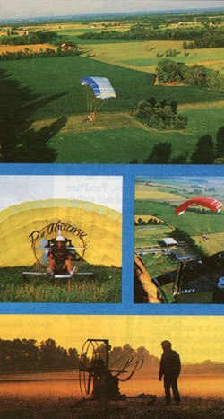

Two 210cc, 2-cycle Solo engines drive the counter- rotating 51 "" propellers, which are mounted on concentric hubs. (This modified system uses expansion- hamber mufflers to boost power.) The tubular circumference guards also serve as a roll cage for added safety.